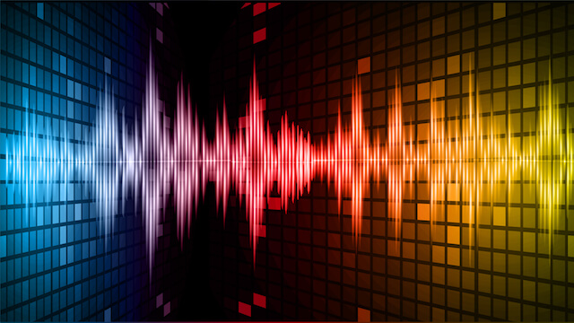

📌 ¿Qué es el sonido?

El sonido es una vibración mecánica que se propaga a través de un medio material (aire, agua, sólidos) en forma de ondas. Se produce cuando un objeto vibra y esas vibraciones hacen oscilar las partículas del medio, llegando a nuestro oído.
📌 Propiedades del sonido
Son los más comunes porque guardan la imagen píxel por píxel.
Frecuencia (Hz):
- Número de vibraciones por segundo.
- Determina el tono:
- Frecuencias bajas → sonidos graves.
- Frecuencias altas → sonidos agudos.
Amplitud:
- Relacionada con la intensidad o volumen del sonido.
- Más amplitud → sonido más fuerte.
Velocidad de propagación:
- Depende del medio:
- Aire: ~343 m/s.
- Agua: ~1500 m/s.
Timbre:
- Es lo que hace que dos sonidos con la misma nota y volumen se distingan.
📌 Clasificación del sonido
Sonidos audibles: entre 20 Hz y 20,000 Hz (lo que percibe el oído humano). Infrasonidos: menos de 20 Hz (usados por algunos animales como los elefantes). Ultrasonidos: más de 20,000 Hz (usados en medicina y tecnología).
📌 Sonido digital
SEn informática, el sonido se convierte en señales digitales mediante un proceso llamado muestreo: El micrófono convierte las ondas sonoras en señales eléctricas. Una tarjeta de sonido las digitaliza (convierte a ceros y unos). El archivo se guarda en un formato de audio (MP3, WAV, AAC, FLAC, etc.). Parámetros del sonido digital: Frecuencia de muestreo: cuántas veces por segundo se toma una muestra del sonido (ej. 44.1 kHz en CDs). Profundidad de bits: precisión de cada muestra (8, 16, 24 bits). Compresión: Con pérdida (MP3, AAC). Sin pérdida (WAV, FLAC).
📌 Aplicaciones del sonido
Comunicación: voz, telefonía, música. Medicina: ultrasonido. Tecnología: asistentes virtuales, IA de voz. Entretenimiento: cine, videojuegos, radio, conciertos.